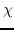
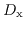
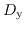

Next: Calibration Methods Up: Calibration, the ATCA, and Previous: Calibration, the ATCA, and
Much of the theory here has been borrowed from the memo `AT Polarisation Calibration' (AT Memo 39.3/015). See that memo for more details. A more detailed description of polarimetric interferometry can be found in Hamaker, Bregman & Sault (1996) and Sault, Hamaker & Bregman (1996) (A&AS 117, 137 and A&AS 117, 149).
Recall from Chapter 5 that Miriad models a feed
as having a composite gain of
Additionally, we have to consider the response of the feeds to polarised emission. Whether a feed is linearly or circularly polarised, its instantaneous response to a signal is a linear combination of two of the four Stokes parameters that describe the wave. In the equatorial frame of the source, ideal linear feeds respond according to
These equations show immediately why it is harder to calibrate an instrument with linear feeds, such as the ATCA, compared with an instrument with circular feeds, such as the VLA. In the latter case, one can make the excellent assumption that the calibrators, which are used to determine the antenna gains, are not circularly polarised. Thus, the RR and LL visibilities are a direct measure of I, for which we have a good model (i.e. a point source of known flux density). Consequently they can be used to calibrate the gains with time. On the other hand, it is not necessarily a good assumption that a calibrator is not linearly polarised, so that XX and YY correlations cannot always be used as a direct measure of I.
In addition, for `alt-az' telescopes, the feeds rotate with respect to the equatorial frame. This causes the actual response of ideal linearly polarised feeds to vary with the angle between the ``sky'' and the feed -  (which varies with time, although non-linearly), according to
So far we have assumed that the feeds are ideal. This is never the case, and their departure from the ideal can be characterised by leakage terms.  is the leakage of the y component of the electric field into the X feed, and  is the leakage of the x component of the electric field into the Y feed. Another way of thinking of them is the combination of the ellipticity and error in the position angle of the polarisation ellipses of each feed.
Incorporating these leakage terms results in fairly gory equations - see Hamaker, Bregman & Sault (1996) and Sault, Hamaker & Bregman (1996) (A&AS 117, 137 and A&AS 117, 149) for more details.
Miriad manager